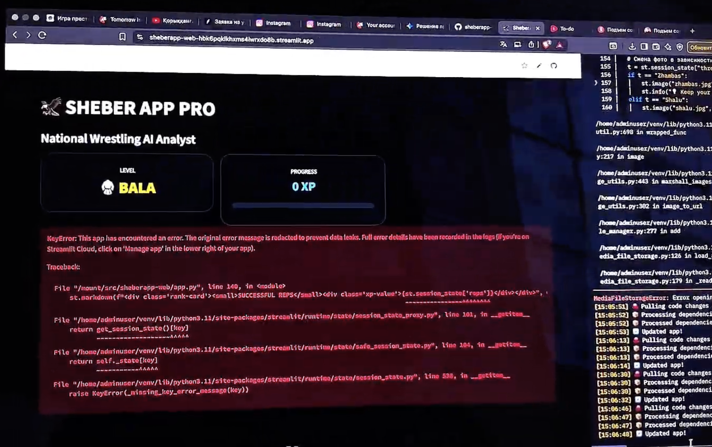

What the Alpha Was
The Alpha stage focused on core mechanics. I started with skeletal tracking on a school computer to verify if MediaPipe could accurately detect joint angles during wrestling moves. At this stage, there was no real interface—just a raw camera feed with landmark overlays and a basic guide image for reference.
What Was Missing
Key Feedback Received


Transition to Beta
In Beta, I moved the project to a full Streamlit web app. I experimented with a 'Neon AI PRO' visual style. The biggest technical challenge was the WebRTC connection error (shown above), which required deep-diving into STUN/TURN server settings to ensure a stable video stream on different networks.
Technical Challenges Solved in Beta


The Final Polish
The final version represents a shift from 'AI PRO' (experimental neon) to a cleaner, more stable SHEBER brand. I simplified the UI to a premium gold-on-dark palette, optimized the MediaPipe complexity for mobile performance, and synchronized the XP/Rank system to prevent lag. The GitHub repository (shown above) contains the finalized production code.